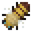

Beekeeping Reference
This chapter is a continuation of the Beekeeping chapter.
The queen bee of a hive has certain abilities. These are passed on and changed when the hive splits. New abilities can only be obtained from the wild, except for Calmness, which has a change to appear during a split in captivity.
Список способностей
- Hardiness: Allows bees to produce honey at lower temperatures. Each hardiness grants an extra 2°C.
- Production: Improves the speed of honey production.
- Mutant: Increases variability in the traits passed during splitting swarms.
- Fertility: Increases likelihood of swarming.
- Crop Affinity: Likelihood of spreading a small amount of nutrients to nearby crops.
- Nature Restoration: Causes new flowers and water plants to spawn around the hive.
- Calmness: Decreases likelihood of bees attacking you.
- Infection Resistance: Decreases likelihood of developing genetic diseases and parasitic infections.
Bees with high Mutant ability have a chance of developing a Genetic Disease. Bees with a genetic disease cannot reproduce.
Bees subject to improper conditions can develop Parasitic Infections. These conditions do not have to do with their species and may spontaneously occur in wild bees. These conditions include: the hive touching any other block besides for the block below it; temperatures below -18 or above 27°C; rainfall below 50 or above 470mm. Infected bees cannot make honey.
Bee Species
Bee Species are found in different climates, and their conditions describe what you may get from a Wild Beehive or an attracted wild swarm. Some species are rarer than others.
- Western Honey Bee: Calmness, Production. 5-20°C, 100-400mm. Extremely common. Western bees also spawn when no other bee species is eligible to spawn.
- Asian Honey Bee: Fertility, Nature Restoration. 10-30°C, 250-400mm. Common.
- Giant Honey Bee: Fertility. 15-30°C, 300-450mm. Common.
- Dwarf Honey Bee: Fertility, Production. 20-30°C, 300-400mm. Common.
- Black Dwarf Honey Bee: Mutant, Nature Restoration. 12-22°C, 150-350mm. Uncommon.
- Koschevnikov's Honey Bee: Hardiness, Production, Nature Restoration. 12-16°C, 200-375mm. Very Rare.
- Himalayan Giant Honey Bee: Hardiness, Mutant, Production. 10-19°C, 150-250mm, y>96. Rare.
- Philippine Honey Bee: Calmness, Crop Affinity. 15-20°C, 350-450mm. Very Rare.
- Borneo Mountain Honey Bee: Hardiness, Infection Resistance. 13-22°C, 150-400mm, y>96. Common.
- Indonesian Giant Honey Bee: Nature Restoration, Fertility, Infection Resistance. 16-20°C, 350-420mm. Uncommon.
- Africanized Honey Bee: Hardiness. 10-25°C. 100-320mm. Common.